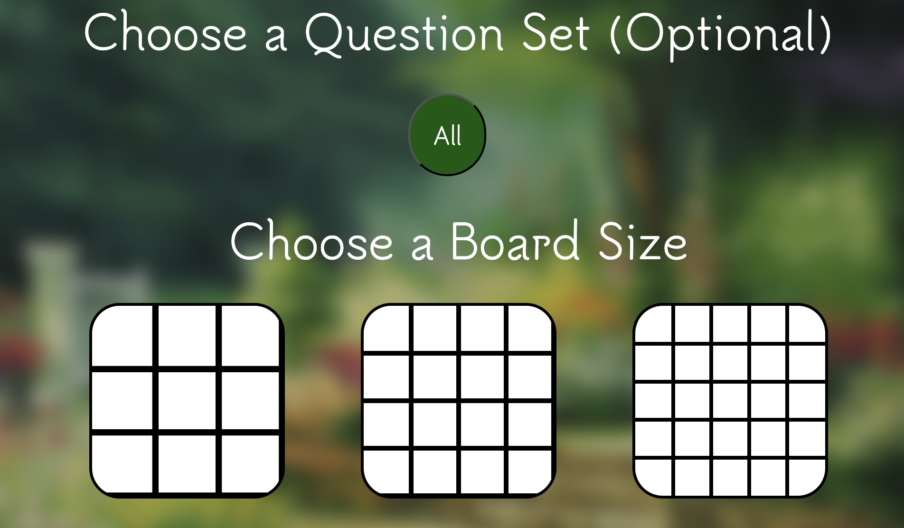

Screenshots


Project Case Study
An educational spelling platform for grades 1-5 that combines interactive gameplay, student profiles, and role-based features for teachers.
The product focused on making spelling practice engaging through drag-and-drop interactions, guided prompts, and age-appropriate visual design.
A four-person team delivered this project with dedicated roles across development, QA, and version control, following milestone-based planning.
Work was structured into three major iterations over a semester, each ending with product demos and client feedback.